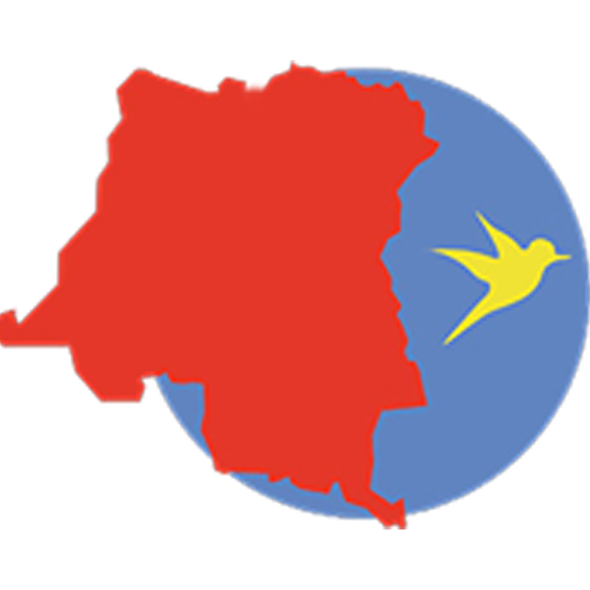

Primary Blue · #6080C0
Header, navigation, section titles, and main brand structure.

Esperancia Gracia
Website Planning Document
Domain: esgra-ongd.cd
The site name uses the NGO’s real identity: Kinshasa Esperancia Gracia. “Esperancia” (hope) and “Gracia” (grace) express the organization’s mission of compassion and support in Kinshasa. Keeping the official name builds trust, recognition, and a clear connection to the existing community.
This charity website presents Kinshasa Esperancia Gracia to the public and potential partners. It will share the NGO’s purpose, history, and about information; show a gallery of real activities; and provide a contact page so visitors can ask questions, volunteer, or support the work.
Planned pages include Home, About (purpose & history), Gallery (activities), and Contact (form).
These colors are taken directly from the NGO logo (images/logo.png):
the blue circle, the red map of the DR Congo, and the yellow bird of hope.
Header, navigation, section titles, and main brand structure.
Call-to-action buttons, key accents, and important highlights.
Hover accents, badges, and small decorative highlights.
Body copy, labels, and supporting paragraph text.
Page background; white surfaces keep the logo colors clear and readable.
Two fonts keep the design clear, warm, and professional for a charity brand.
Hope and grace in Kinshasa
Used for page titles (h1), section headings (h2–h3), and brand emphasis.
Outfit is used for paragraphs, navigation links, form labels, buttons, and general interface text because it stays readable on mobile and desktop.
Simple home-page wireframes for mobile and wider views. Boxes represent content blocks and their layout relationship, not final visual design.